JabbR Deployment
This guide outlines the process of deploying JabbR from a pre-built zip archive. The process will install JabbR and make it available through port 80 (http) on the machine. You should be able to access your instance via http://computername/ or http://public-ip/.
The instructions are targeted to Windows Server 2012, using SQL Server 2012 Express. It is possible to run on other versions of Windows / SQL Server - you won't be able to use the Powershell script, but the manual process of installing and configuring should be relatively similar in other environments.
Before you start this guide, make sure that you have your windows install and SQL Server up and running. Make a note of your SQL instance name and the data source that we'll need to use later (possibly "." or ".\SQLEXPRESS").
Dot-point overview
- Install Windows and SQL Server (http://www.microsoft.com/en-us/download/details.aspx?id=29062 - You should only need Express with tools, which is ENU\x64\SQLEXPRWT_x64_ENU.exe)
- Ensure that the IIS Web Server and ASP.NET 4.5 are installed on the machine (IIS Management Tools help too)
- Create a folder for the JabbR web application
- Download the JabbR application and extract it to the web application folder
- Stop the Default Website in IIS, Create a new Website with a new Application Pool
- Create an empty database, create an SQL Server login for the Application Pool user, create a user for them on the database and add them to the db_owner role
- (If required) Update the connection string in the web.config to point at the correct database
- Set the ACL on the \Content directory to allow temporary files to be written by the Application Pool user
- Access the newly created site, and register the first user (who will be automatically made an admin)
- (Optionally) go to the configuration and provide an Azure Blob Storage URL for file uploads.
Easy Mode (Powershell) Server 2012 Only
The following script will perform a lot of the grunt-work, performing item 2 to item 8 above. Be sure to update the $dbServer if you haven't got a data source of ".". Make sure that you run the script in an administrator instance of powershell (right click on the powershell link and select "Run as Administrator").
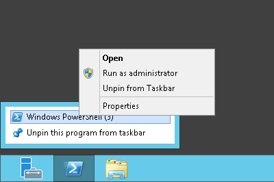
$webFolder = "$env:systemdrive\inetpub\jabbr"
$appPoolName = "JabbR"
$siteName = "JabbR"
$dbServer = ".\SQLEXPRESS"
$dbName = "JabbR"
$fileSource = "http://teamcity.codebetter.com/repository/download/bt980/.lastSuccessful/site.zip?guest=1"
$tempFile = "$env:temp\jabbr.zip"
$identity = "IIS AppPool\$appPoolName"
Import-Module servermanager
Add-WindowsFeature Web-Server
Add-WindowsFeature Web-Mgmt-Console
Add-WindowsFeature Web-Asp-Net45
New-Item $webFolder -type directory
Stop-Website -Name 'Default Web Site'
New-WebAppPool $appPoolName
New-Website -Name $siteName -Port 80 -PhysicalPath $webFolder -ApplicationPool $appPoolName
(New-Object System.Net.WebClient).DownloadFile($fileSource, $tempFile )
$sh = New-Object -com shell.application; $sh.namespace($webFolder).Copyhere($sh.namespace($tempFile ).items())
[System.Reflection.Assembly]::LoadWithPartialName('Microsoft.SqlServer.SMO')
$server = New-Object Microsoft.SqlServer.Management.Smo.Server($dbServer)
$db = New-Object Microsoft.SqlServer.Management.Smo.Database($server, $dbName)
$db.Create()
$login = New-Object Microsoft.SqlServer.Management.Smo.Login($server, $identity)
$login.DefaultDatabase = $dbName
$login.LoginType = [Microsoft.SqlServer.Management.SMO.LoginType]::WindowsUser
$login.Create()
$user = New-Object Microsoft.SqlServer.Management.Smo.User($db, $identity)
$user.Create();
$db.Roles["db_owner"].AddMember($login.Name)
(Get-Content "$webFolder\web.config") |
Foreach-Object {$_ -replace "Data Source=\.\\SQLEXPRESS", "Data Source=$dbServer"} |
Foreach-Object {$_ -replace "Initial Catalog=JabbR", "Initial Catalog=$dbName"} |
Set-Content "$webFolder\web.config"
$acl = Get-Acl "$webFolder\Content"
$rule = New-Object System.Security.AccessControl.FileSystemAccessRule($identity, "Write", "ContainerInherit, ObjectInherit", "None", "Allow")
$acl.SetAccessRule($rule)
Set-Acl "$webFolder\Content" $acl
$acl = Get-Acl "$webFolder\Scripts"
$rule = New-Object System.Security.AccessControl.FileSystemAccessRule($identity, "Write", "ContainerInherit, ObjectInherit", "None", "Allow")
$acl.SetAccessRule($rule)
Set-Acl "$webFolder\Scripts" $acl
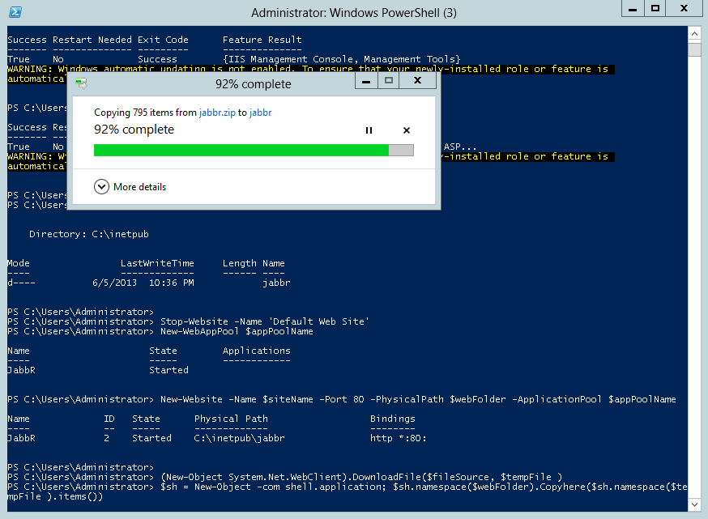
Slightly-less-easy Mode (Manual install)
Configure Windows
Open up Server Manager, and click the Add Roles and Features link.
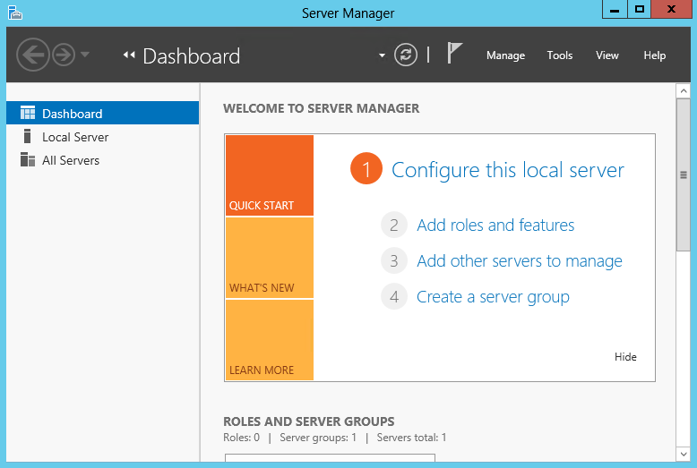
Add the Web Server (IIS) role.
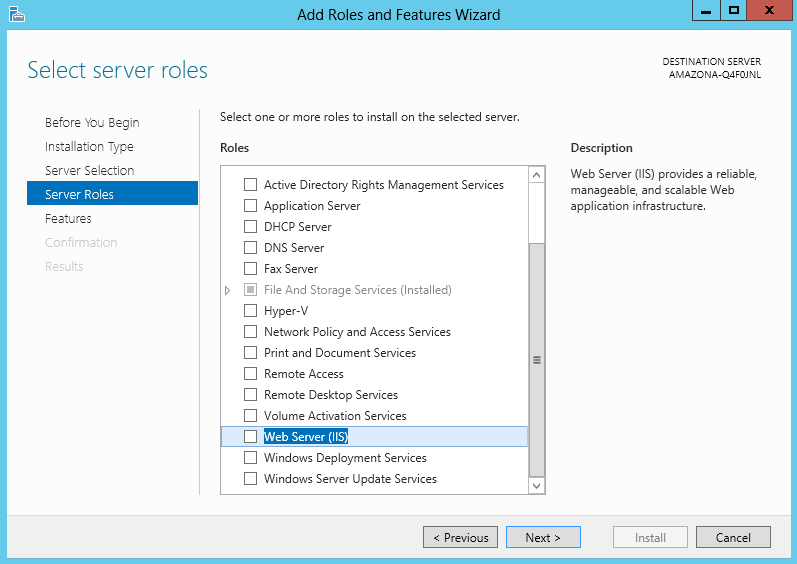
Add the ASP.NET 4.5 feature.
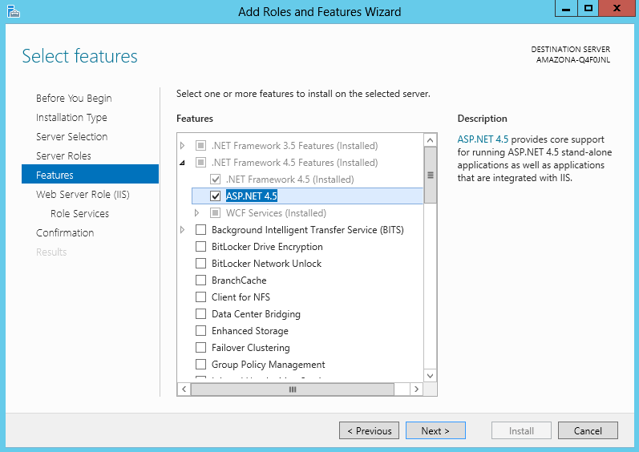
Add the ASP.NET 4.5 Role Service.
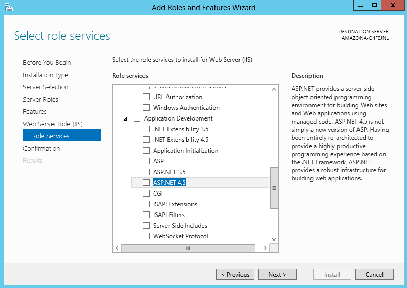
Copy JabbR to your application directory
Download and copy the JabbR install zip to your machine. You can find the link at http://about.jabbr.net.
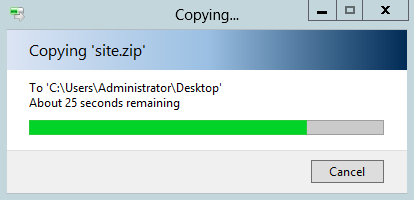
Unzip the install zip to a new folder where you want the site to be hosted from (eg C:\inetpub\jabbr).
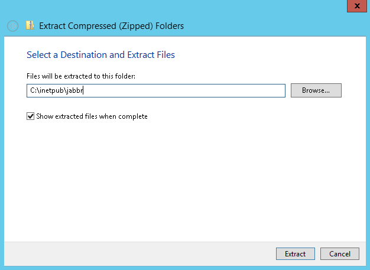
Configure the Web Site in IIS
Open up IIS Manager, select the Default Web Site (under Sites) and click the Stop button. Now, right click on Sites and select Add Website...
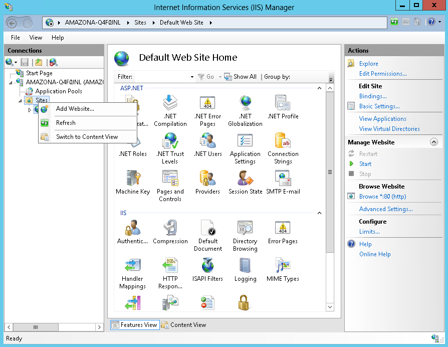
Provide a site name and the folder you want the site to be hosted from. We don't mind that the binding *:80: is assigned to another site (the Default Web Site that we just stopped) so select Yes on the dialog.
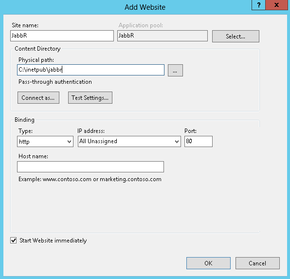
Configure the Database
Open SQL Server Management Studio. Connect to your database instance (and take note of the Server name that you have to enter - this is the Data Source that we need to use later).
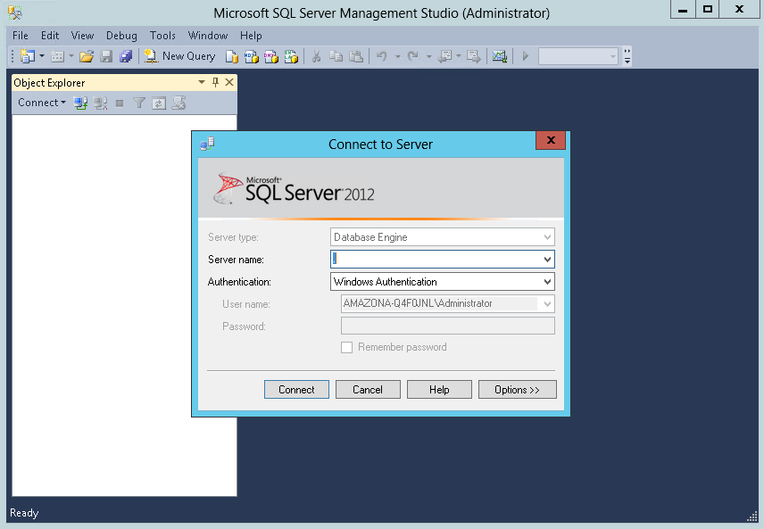
Right click on Databases and select New Database... Provide a name (eg JabbR), the default options are fine however, click OK to continue.
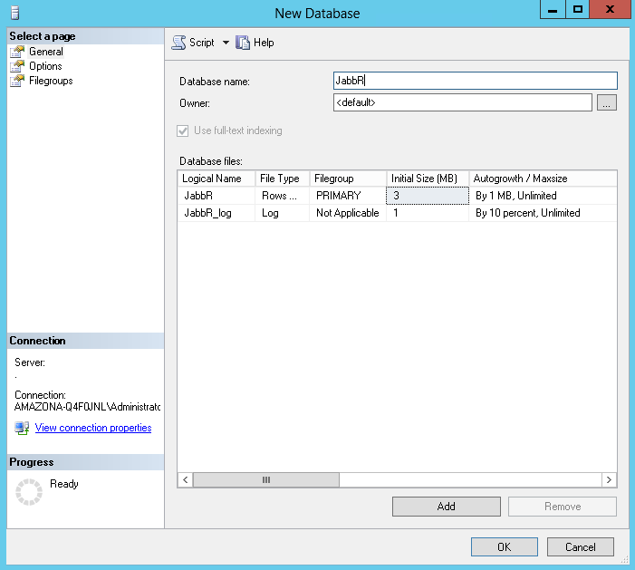
Expand the Security node, Right click on Logins and select New Login... You want a windows login running as the IIS App Pool for your web application (if your Site Name was JabbR, by default this will be IIS AppPool\JabbR). Select JabbR as the default database, and click OK.
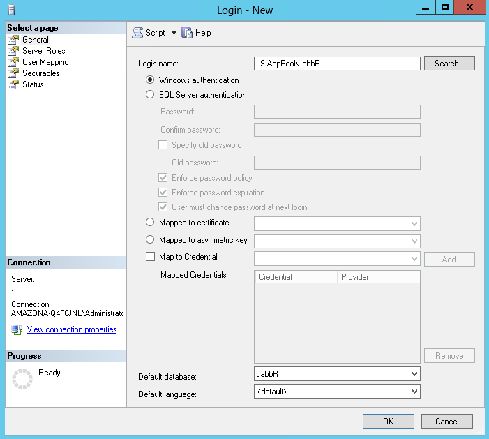
Next, expand the database that you created, its Security node, right click on Users and select New User...
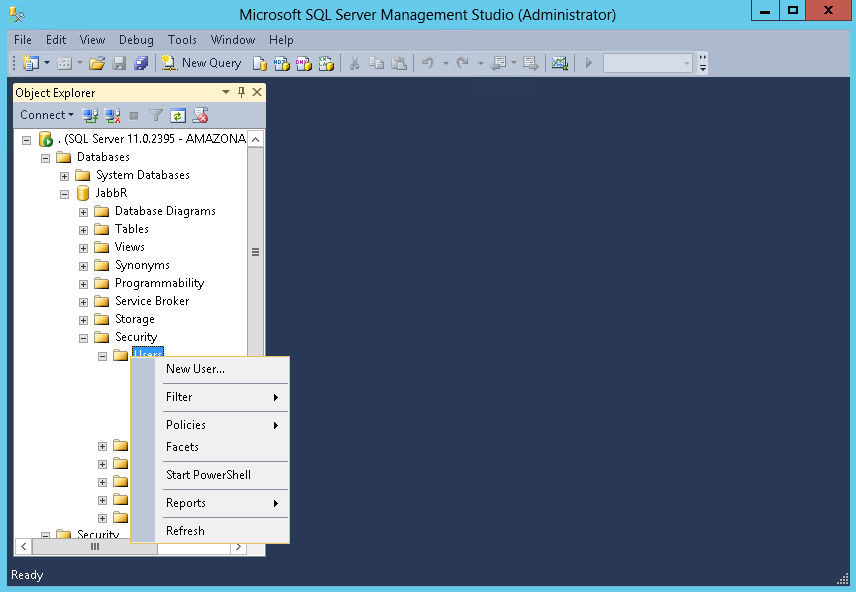
Create an SQL user with login for the login created earlier:
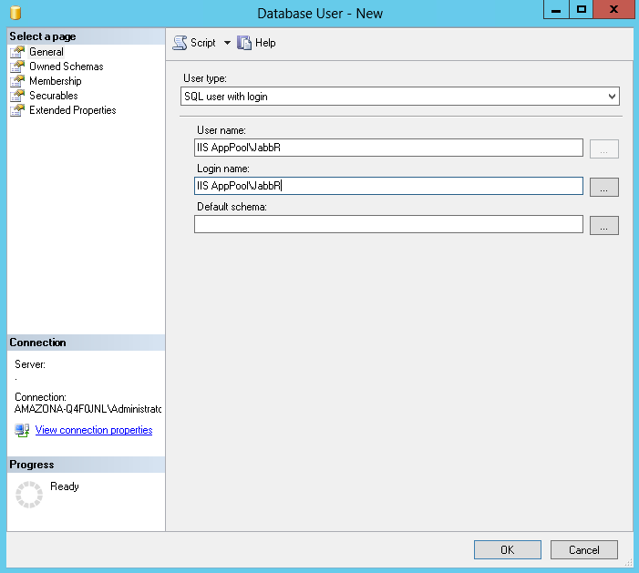
On the membership tab, check db_owner to add them to that role:
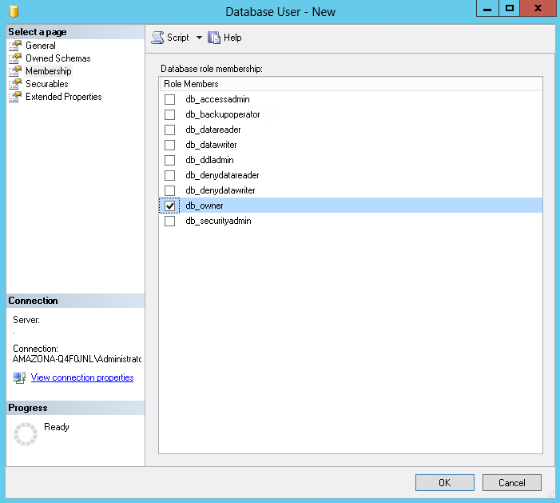
Update the SQL Connection String
Edit the connectionString value in the web.config file to point at where you want the database to reside.
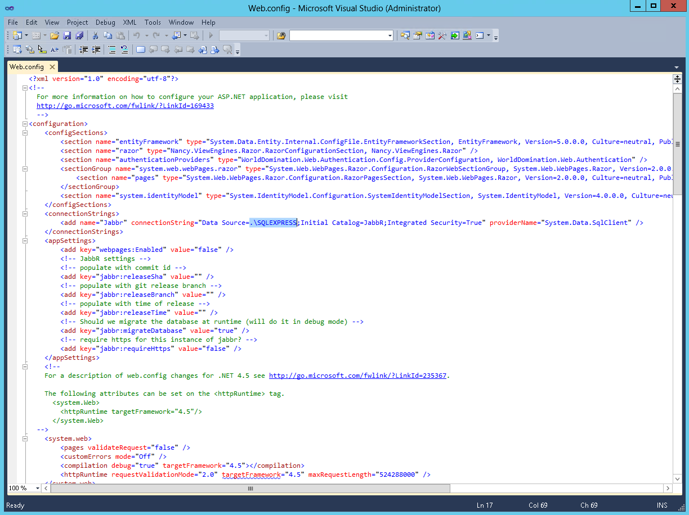
Update permissions for the /Content and /Scripts directories
Open the properties for the /Content directory (you can right click in Explorer to get this dialog). Under security, click Edit, and enter the windows login for the App Pool (eg IIS AppPool\JabbR). Click OK and give them Write permissions.
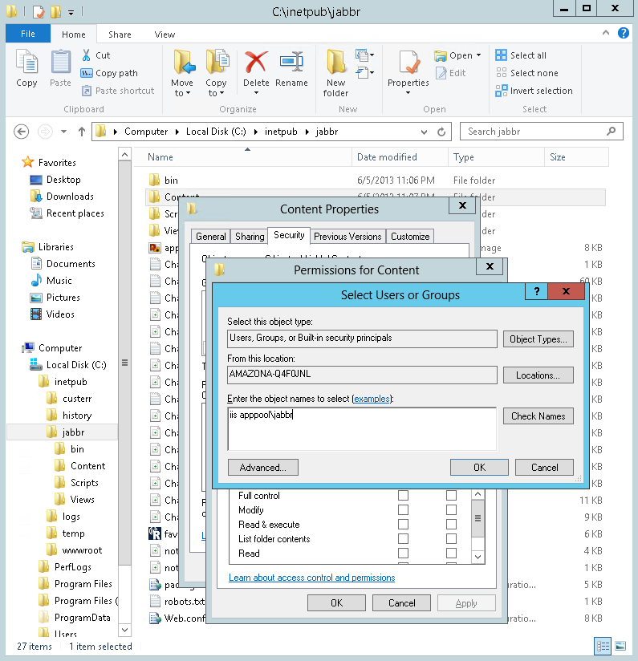
Repeat this process for the /Scripts directory.
Getting Started with JabbR
The first user that is registered on a JabbR instance is automatically created as an admin. Once you've set up your instance, you just visit its url (eg http://localhost/ if you're running locally, or http://machinename/ or http://remote-ip/ if you're running on another machine).
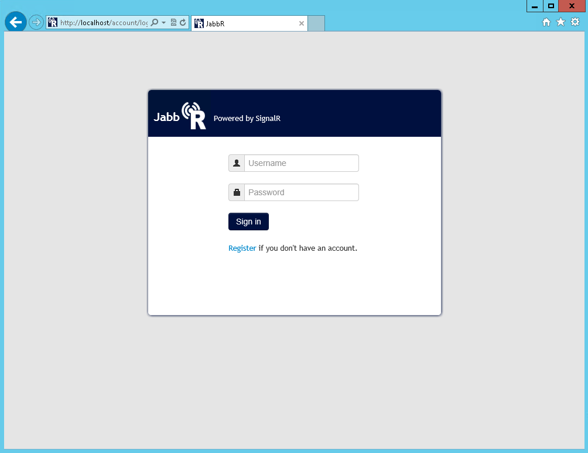
Click the Register link, and provide some information. You will automatically be logged in and the screen should be pretty empty (this is because no rooms exist yet). In JabbR, to do a lot of things, you enter commands into the chat textbox. A command is simply a message that starts with a slash eg "/create" is used to create a room. If you want to see the commands that are available, click the Question Mark at the top right of the screen. If you type "/create RoomNameHere" it will make a new chatroom for you named RoomNameHere and you will join it automatically.
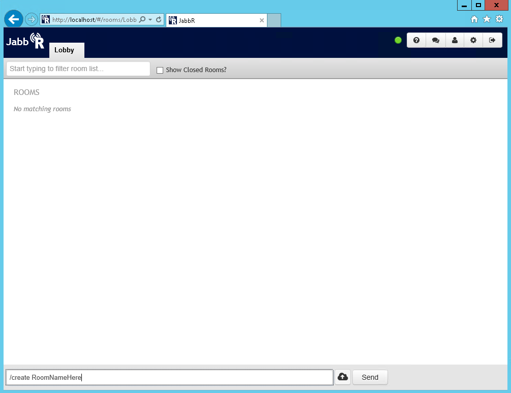
If you want file uploads to work, you'll need to provide an Azure Blob Storage Connection string. This can be entered via the JabbR Settings page, which can be reached by clicking on the gear at the top right of the page (this is only shown to admins). On this page, you can also provide your ID for Google Analytics.

That's all there is to it!